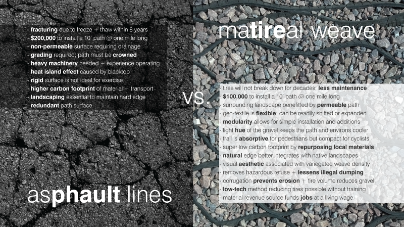

social
matireal is an accessible low tech application that can be constructed by and for the communities to clean up neighborhoods, build and spatial and social networks, and create pathways to support recreation and connectivity.
economical
matireal can provide its own capitol by revenue available through a realignment of municipal disposal costs (up to $2/tire), saving taxpayers money, and these dollars to be reinvested in our local economy rather than contracted to regional tire haulers.
ecological
matireal removes hazardous waste from the environment, transforming this infinite resource into a geo-textile locally, which also results in quantifiable carbon offset from current recycling methods.
